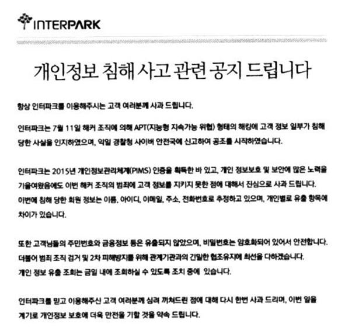
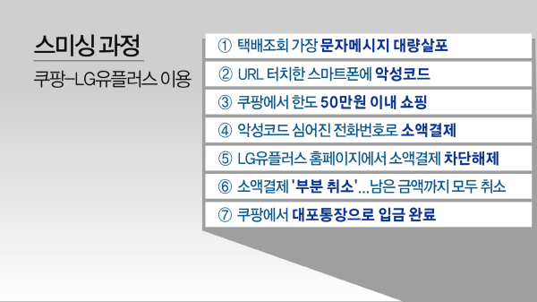
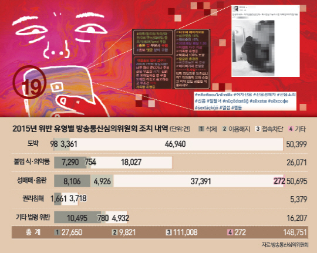

생생보안정보통
생생보안정보통정보통신망법이란?
정보통신망 이용을 촉진하고 정보통신 서비스를 이용하는 자의 개인정보를 보호함과 아울러 정보통신망을 건전하고 안전하게 이용할 수 있는 환경을 조성하여 국민 생활 향산과 공공복리 증진에 이바지함을 목적으로 제정된 법률
정보통신망법 제48조 (정보통신망 침해행위 등의 금지)
- 누구든지 정당한 접근권한 없이 또는 허용된 접근권한을 넘어 정보통신망에 침입하여서는 아니 된다.
- 누구든지 정당한 사유 없이 정보통신시스템, 데이터 또는 프로그램 등을 훼손ㆍ멸실ㆍ변경ㆍ위조하거나 그 운용을 방해할 수 있는 프로그램(이하 "악성프로그램"이라 한다)을 전달 또는 유포하여서는 아니 된다.
- 누구든지 정보통신망의 안정적 운영을 방해할 목적으로 대량의 신호 또는 데이터를 보내거나 부정한 명령을 처리하도록 하는 등의 방법으로 정보통신망에 장애가 발생하게 하여서는 아니 된다.
통신사기피해환급법이란?
전기통신금융사기를 방지하기 위하여 정부의 피해 방지 대책 및 금융회사의 피해 방지 책임 등을 정하고, 전기통신금융사기의 피해자에 대한 피해금 환급을 위하여 사기이용계좌의 채권소멸절차와 피해금환급절차 등을 정함으로써 전기통신금융사기를 예방하고 피해자의 재산상 피해를 신속하게 회복하는 데 이바지하는 것을 목적으로 제정된 법률
통신사기피해환급법 제2조
- 전기통신을 이용하여 타인을 기망 공갈함으로써 재산상의 이익을 취하거나 제3자에게 재산상의 이익을 취하게 하는 다음 각 목의 행위를 말한다.
- 자금을 송금 이체하도록 하는 행위
- 개인정보를 알아내어 자금을 송금 이체하는 행위
사이버 범죄의 분류
- 정보통신망 침해 범죄
- 해킹, 서비스거부공격, 악성프로그램, 신종 정보통신망 침해형 범죄
⇒ 정보 통신망 자체를 공격하는 범죄 - 정보통신망 이용 범죄
- 인터넷 사기, 사이버금융범죄, 개인 위치정보 침해, 사이버 저작권 침해, 스팸 메일, 기타 정보통신망 이용형 범죄
⇒ 정보통신망 기술을 이용한 범죄 - 불법 콘텐츠 범죄
- 사이버 음란물, 사이버 도박, 사이버 명예훼손, 사이버 모욕, 사이버 스토킹, 기타 불법 콘텐츠 범죄
사이버 범죄의 예시
- 정보통신망 침해 범죄

보안정책 미비로 사내 PC로 개인적인 프로그램을 다운로드해 공격자가 쉽게 사내PC를 장악해 고갞 개인정보가 대량으로 유출된 사건 - 정보통신망 이용 범죄

스미싱 범죄의 특성상 개인정보를 갈취당해 피해자 스마트폰에서 소액결제가 이뤄져도 통신요금이 정산되는 월말까지 피해사실을 알기 어려워 신속한 대처가 쉽지 않다. - 불법 콘텐츠 범죄

음란물, 불법 도박, 성매매 유도 등 유해물 콘텐츠의 사이버유통을 보여주는 자료이다. 정보기기를 처음 접하는 연령이 계속 낮아지고 있어 의도치 않게 음란물에 접하게 된다.